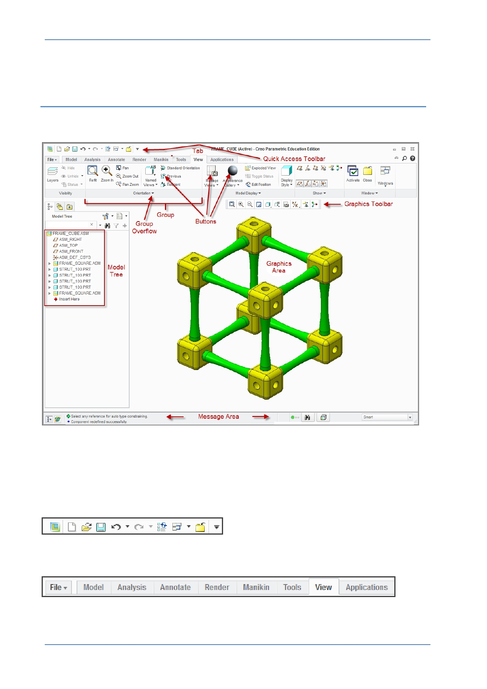

PTC Academic Program
Module 2
Understanding the Creo Parametric interface
The Main Creo Parametric interface looks like this.
Main Interface Theory
The Creo Parametric user interface is easy to navigate with the key tools for a particular
task contained in the ribbon across the top of the graphics area. Key elements of the
main interface include:
Quick Access Toolbar — Contains commonly used tools and functions.
Ribbon Tabs — A set of tabs across the top of the interface. The active tab displays a
set of tools in the ribbon immediately below. Here the View tab is active.
© 2012 PTC
Creo Parametric 2.0 Primer
Page 6